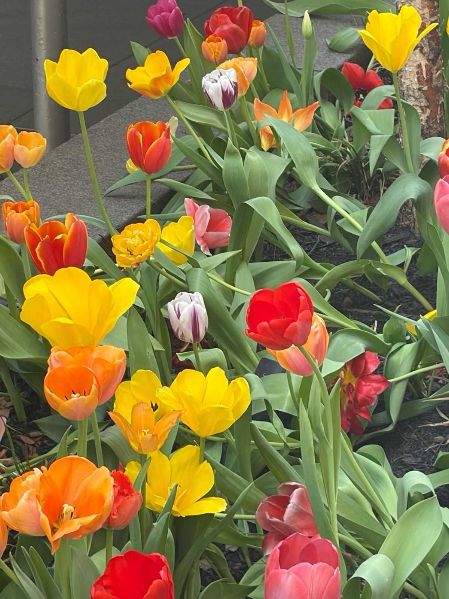
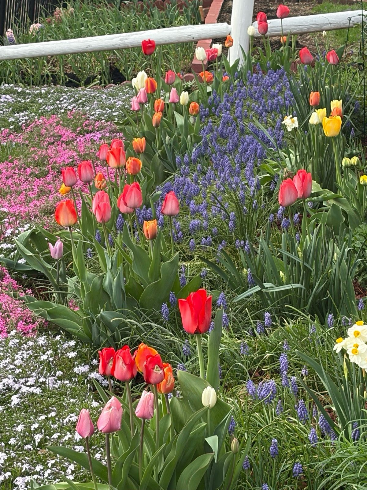
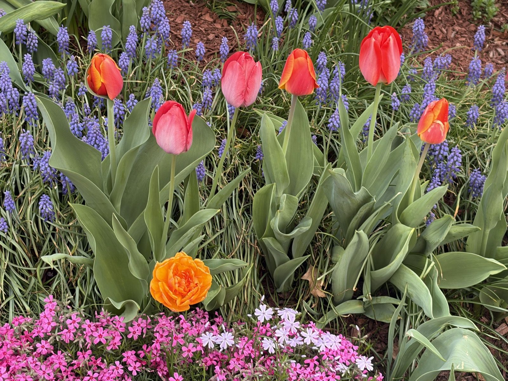

Tulip Roll Call
Back in November I planted bulbs in the cold drizzle, muttering that future-me had better appreciate it. Future-me appreciates it. Here's the honest report card on everything that came up.

The mixed bag (A−): I gave up on tasteful color-blocking this year and planted a mix, and the result looks like confetti — yellows, oranges, hot pinks, and a purple-and-white striped one (Rembrandt style) that I'd pick as valedictorian. The doubles came up looking like tiny peonies and fooled two separate neighbors.

The muscari river (A+): The best decision of last fall was underplanting the whole strip with grape hyacinth. The tulips rise out of a blue stream, the muscari hides all the awkward tulip ankles, and it blooms for weeks longer than the tulips do. This combination is now permanent policy.

The sidewalk row (B+): Solid reds and corals, dependable as a metronome. Docked half a grade because the squirrels relocated at least a dozen bulbs — there's a lone red tulip blooming in the middle of the phlox carpet twenty feet away, which I did not plant there, but fine. It works.
Planting notes for this fall: more muscari (double the order), more doubles, and chicken-wire cages over anything the squirrels can reach in October.